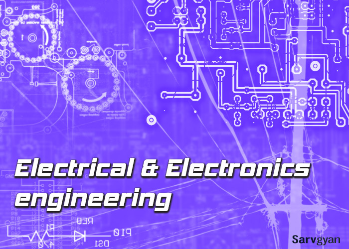

Technical Interview Questions & Answers For EEE

What are the different operation regions of the SCR?
SCR or thyristor will have three regions of operations based on the mode in which the device is connected in the circuit.
Reverse blocking region: When the cathode of the thyristor is made positive with respect to the anode and no gate signal is applied. In this region scr exhibits the reverse blocking characteristics similar to diode.
Forward blocking region: In this region the anode of the thyristor is made positive with respect to the cathode and no gate signal is applied to the thyristor. A small leakage current flow in this mode of operation of the thyristor
Forward conduction region: when the forward voltage applied between the anode and cathode increases at particular break over voltage avalanche breakdown takes place and thyristor starts conducting current in forward direction. By this type of triggering the device damages the scr. Hence a gate signal is applied before the forward break over voltage to trigger the scr.
What is Latching current?
Gate signal is to be applied to the thyristor to trigger the thyristor ON in safe mode. When the thyristor starts conducting the forward current above the minimum value, called Latching current, the gate signal which is applied to trigger the device in no longer require to keep the scr in ON position.
What is Holding current ?
When scr is conducting current in forward conduction state, scr will return to forward blocking state when the anode current or forward current falls below a low level called Holding current
Note: Latching current and Holding current are not same. Latching current is associated with the turn on process of the scr whereas holding current is associated with the turn off process. In general holding current will be slightly lesser than the latching current.
Why thyristor is considered as Charge controlled device?
During the triggering process of the thyristor from forward blocking state to forward conduction state through the gate signal, by applying the gate signal (voltage between gate and cathode) increases the minority carrier density in the p-layer and thereby facilitate the reverse break over
of the junction J2 and thyristor starts conducting. Higher the magnitude of the gate current pulse, lesser is the time required to inject the charge and turning on the scr. By controlling the amount of charge we can control the turning on time of the scr.
What is the relation between the gate signal and forward break over voltage (VBO)?
Thyristor can be triggered by increasing the forward voltage between anode and cathode, at forward break over voltage thyristor starts conducting. However this process may damage the thyristor, so thyristor is advices to trigger on through the gate pulse. When a gate signal is applied thyristor turns on before reaching the break over voltage. Forward voltage at which the thyristor triggers on depends on the magnitude of the gate current. Higher is the gate current lower is the forward break over voltage
What are the different losses that occur in thyristor while operating?
Different losses that occur are
Forward conduction losses during conduction of the thyristor
Loss due to leakage current during forward and reverse blocking.
Power loss at gate or Gate triggering loss.
Switching losses at turn-on and turn-off.
What are the advantages of speed control using thyristor?
Advantages :
1. Fast Switching Characteristics than MOSFET, BJT, IGBT
2. Low cost 3. Higher Accurate.
What happens if i connect a capacitor to a generator load?
Connecting a capacitor across a generator always improves powerfactor, but it will help depends up on the engine capacity of the alternator, other wise the alternator will be over loaded due to the extra watts consumed due to the improvement on pf. Secondly, don't connect a capacitor across an alternator while it is picking up or without any other load.
Why the capacitors works on ac only?
Generally capacitor gives infinite resistance to dc components (i.e., block the dc components). it allows the ac components to pass through.
Explain the working principal of the circuit breaker?
Circuit Breaker is one which makes or breaks the circuit. It has two contacts namely fixed contact & moving contact under normal condition the moving contact comes in contact with fixed contact thereby forming the closed contact for the flow of current. During abnormal & faulty conditions (when current exceeds the rated value) an arc is produced between the fixed & moving contacts & thereby it forms the open circuit Arc is extinguished by the Arc Quenching media like air, oil, vacuum etc.